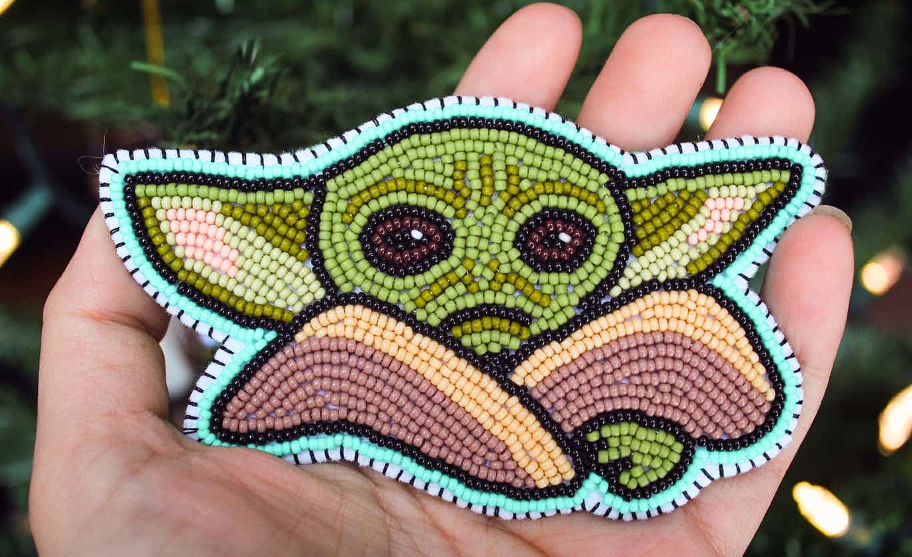
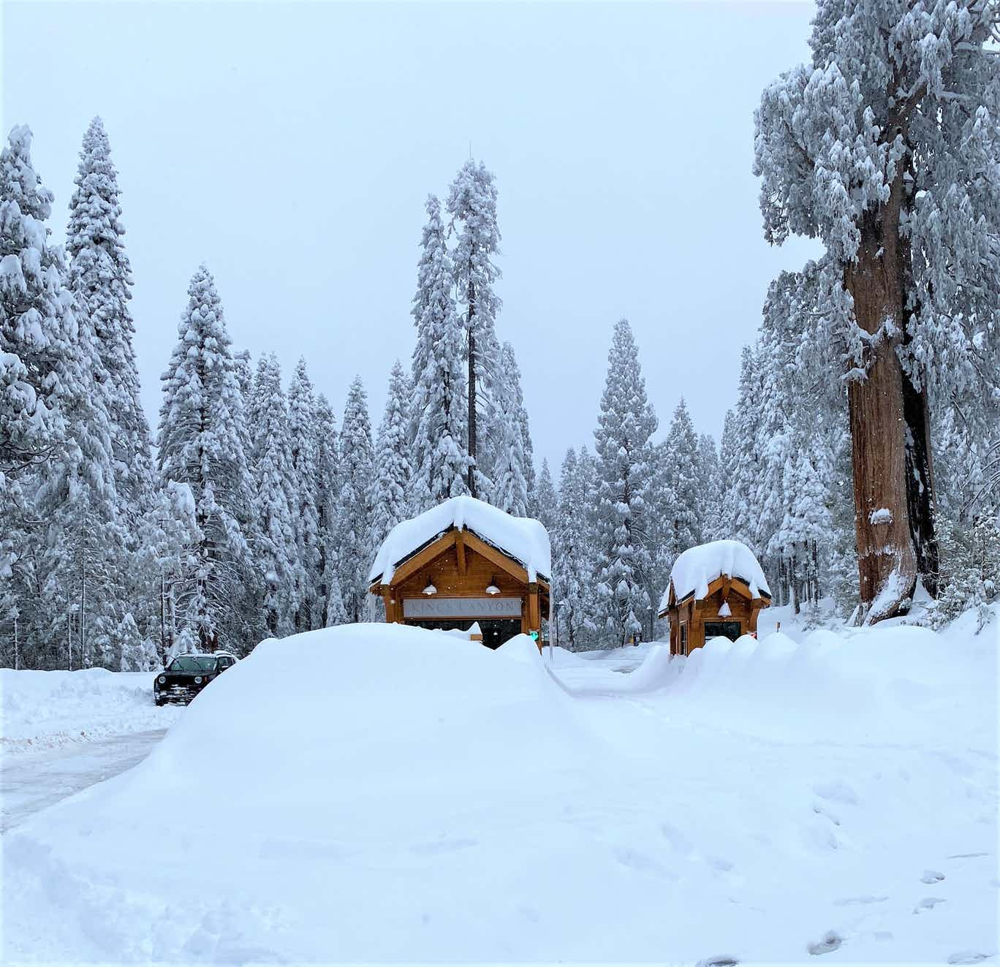
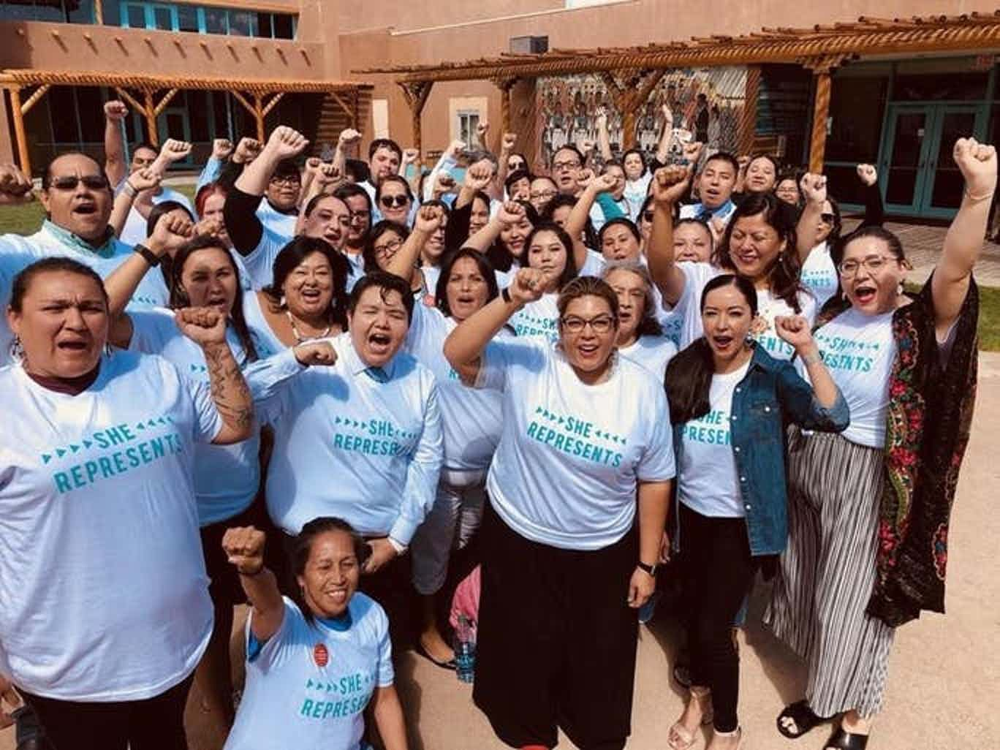
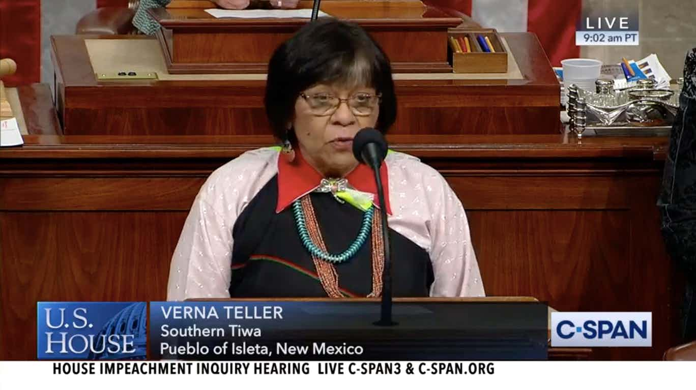

If you’ve seen photos of an adorable green creature on social media lately, you’re not alone. You know the one with big curious eyes and small fingers?
Sen. Kamala Harris, D-California, announced the end of her 2020 presidential bid.
The presidential candidate who paid the most attention to Indian Country is calling it quits. Montana Gov. Steve Bullock began his longshot campaign with a visit to the Meskwaki Indian Settlement in Iowa.

Two winter storms brought heavy snow and rain to the entire country over the weekend. What else came with it? High wind advisories.

Three years ago Native researchers Marisa Duarte and Morgan Hayes saw reports from the Federal Communications Commission that said Native people didn’t need access to the internet because there was no demand for it.

Verna Teller is chief justice of Isleta Pueblo … and she made history this morning. She was the first Native person to deliver an opening prayer on the floor of the U.S. House of Representatives..